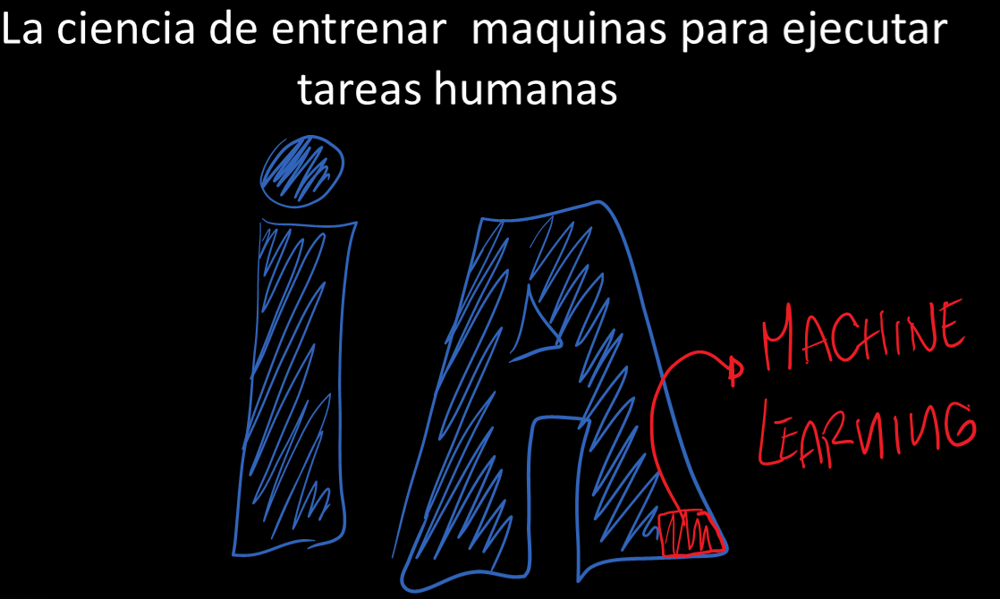
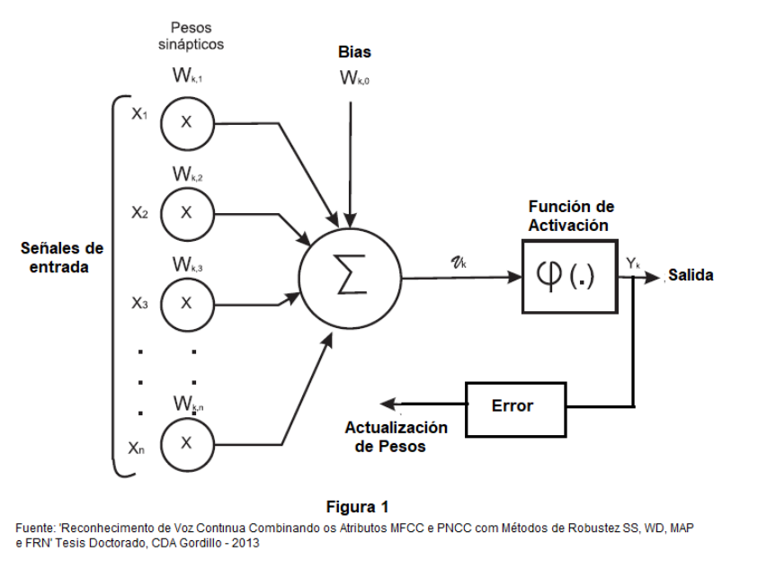
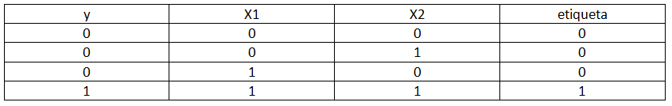
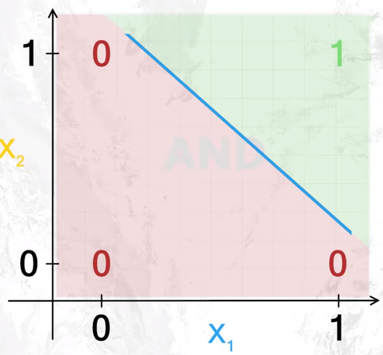
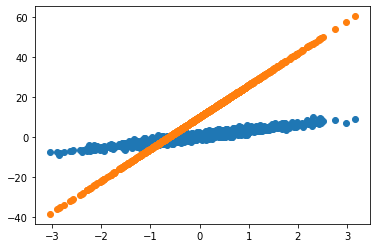
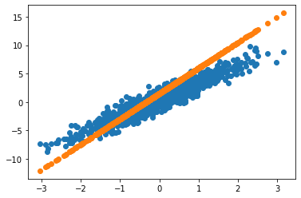

Antes de inicar con conceptos básicos sobre redes neuronales tensorflow keras etc, estudiaremos las ideas fundamentales sobre el mundo de la inteligencia artificial.
La inteligencia artificial se puede definir como la ciencia de entrenar máquinas para ejecutar tareas humanas y machine learning es una parte de la inteligencia artifical encargada de resolver esos problemas.
Image('ML.PNG', width = 800)

Machine Learning es un metodo de análisis para la construcción de modelos automatas, que usan diversos algoritmos para aprender iterativamente de un conjunto de datos historicos.
Los campos de aplicación de machine learning son muy diversos:
- Detección de fraudes
- Resultados de motores de busqueda
- Análisis de sentimientos
- Detección de objetos
- Reconocimiento de voz
- Realce de imágenes.
Uno de los sistemas de machine learning que ha revolucionado la industria en los ultimos años son las conocidas redes neuronales.
Las redes neuronales son una forma de modelar matematicamente un neuron biológico. Esto es, son arquitecturas inspiradas en el cerebro humano y en su estructura ampliamente paralela, con capacidad de adquirir, almacenar y utilizar conocimiento experimental, generalizando su conocimiento a partir de ejemplos anteriores.
En 1943 se lanza el primer modelo computacional para una neurona artificial y es llamado de perceptron.
El perceptron (Figura 1), es la idea mas simple de un neuron artificial y se puede definir como el conjunto de entradas de una muestra X las cuales representan los estimulos que la neurona recibe del ambiente y que se combinan con los pesos sinápticos W para determinar la entrada del neuron, dicha entrada pasa por una función de activación o umbral que genera una salida Y la cual determinará si el neuron se activa siempre y cuando el valor de la combinacion lineal de sus entradas con los pesos supere el umbral de activación.
Image('perceptron.PNG', width = 800)

En un neuron podemos codificar información que nos servira para realizar tareas de calsificación prediccion, etc. Sin embargo la figura de un perceptron matematicamente (antes de la funcion de activación), no es mas que un función que realiza un calculo numérico lineal. Internamente la neurona utiliza todos los valores de entrada para realizar una suma ponderada entre los estimulos X multiplicados por un valor especifico llamado pesos W y que son los parametros y la parte fundamental del proceso de aprendizaje.
$$Y = x_1w_1 + x_2w_2 + x_3w_3 ..+ ..+ ..+ x_nw_n + b$$
donde b es el termino independiente de la ecuación y es conocido como bias el cual tomara el control para mover la recta de la función, y es una conección mas a la entrada de cada neurona.
Si lo ven el modelo matemático de una neurona no es mas que una funcion lineal
$$ y = aX +b$$
Una forma práctica de analizar una neurona artificial es simulando una compuerta and donde tenemos dos posibles valores de entrada x1 , x2 y cuatro posibles combinaciones de salida y que las podemos etiquetar como 0(inactiva) y 1(activa), este nuevo concepto etiqueta es clave en el aprendizaje de máquinas supervisado ya que la neurona aprenderá de los datos históricos o también conocidos como etiquetas ( como se puede ver las etiquetas son los mismos valores de salida).
Image('tabla.PNG', width = 800)

Pero como se sabe el resultado de usar una regresión lineal entre las combinaciones entre x1 y x2 nos da un resultado numérico continuo y no un número binario, para eso se introducen las llamadas funciones de activación, que en la figura 1 son representadas por la ultima caja del modelo y que utilizaran un umbral para decidir si el valor numérico entregado por la suma ponderada supera dicho umbral se entregará como salida un 1 ( neurona activa) caso contrario será entregado un 0 ( neurona no activa).
una forma mas simple e intuitiva de ver este problema es tratandolo como un problema de clasificación. Esto es encontrar una recta que separe los valores 0 de los valores 1 como se muestra en la siguiente grafica de una compuerta and.
Image('and.PNG', width = 500)

La linea azul es la linea de regresión que la neurona aprendio despues de alguna etapas de entrenamiento y consiguio encontrar los mejores valores de W para lograr su objetivo ( separar los valores 0 de los valores 1).
Pero que es el entrenamiento? el entrenamiento en modelos de machine learning es la aplicacion de un algoritmo de aprendizje através de iteraciones sobre el conjunto de parametros W y b con el fin de actualizarlos en cada iteración reduciendo el error y ahciendo que la salida sea lo mas parecida posible a la etiqueta.
Estos algoritmos de aprendizaje buscan imitar la la forma en que funcionan las neuronas en el cerebro (si generan pulsos electricos que se trasmitan a otras neuronas o no), se utiliza la formula de aprendizaje que se resume en 2 pasos:
- inicialización de pesos con valores pequeños
- Para cada muestra de entrada de X se cacula su respectiva salida Y y se actualizan los pesos W de la siguiente manera:
$$W_j = W_j + \Delta W_j$$
donde $\Delta W_j$ es:
$$\Delta W_j = \eta (Y - \hat {Y}) X_j$$
donde $Y$ es el valor de la etiqueta original y $\hat {Y}$ es el valor calculado a la salida del perceptron, usando como funcion de activación el escalon unitario.
#Porque se deben entrenar los modelos de aprendizaje automático?
A fin de que nuestros algoritmos de aprendizaje automático funcionen de la manera mas adecuada posible (esto es que se ajusten lo mejor posible al problema planteado), se debe llevar a cabo un mapa conceptual de que es lo que se pretende lograr con el modelo y como podemos conseguir que dicho modelo se ajuste a los datos presentados. Esto requiere de mucha practica ya que cada algoritmo lleva caonsigo sus propias caracteristicas y se basa en determinadas suposiciones, “Ningun algoritmo es perfecto todos los modelos estan equivocados pero algunos son utiles. George Eward Pelham "
A dia de hoy existen, decenas de frameworks y APIs que nos facilitan crear modelos de aprendizaje automático de una forma simple y eficiente. Pero que hay detras de estos modelos? porque se habla de algoritmos y reglas de aprendizaje? y para que sirve esto?. Pues en este apartado encontraras una simple explicación del porque es importante entrenar los modelos de aprendizaje a través de un ejemplo de regresión lineal.
Todo parte de un conjunto de datos historicos, el machine learning no existiria si no tuvieramos datos con que entrenar nuestros modelos (sem dados no há para isso ==> pequeña muestra de un error en un sistema de reconocimiento en portugues cuando pronuncié sin datos no hay paraiso :-)).
Como el objetivo es crear un sistema de regresión linela, recurriremos a su formula:
$$ y=WX+b$$
donde W y b como ya sabemos representan los pesos y bias como son llamados en machine learning o como matematicamente se les conoce la pendiente e intersección de la recta respectivamente, X representa el conjunto de entrada de nuestros sistemas (nuestros datos historicos) y y será el resultado deseado.
Iniciaremos creando un conjunto de características aleatorias sinteticas que representaran el conjunto de datos de entrada X, suponiendo que se trata de una variable de precio de casas en un barrio por ejemplo.
#importamos las librerias necesarias
import tensorflow as tf
# generamos valores aleatorios de entrada en fomra de tensores
Numero_muestras=1000
X = tf.random.normal(shape=(Numero_muestras,))
Ahora crearemos el modelo de regresión lineal, basado en la formula anterior e inicializando los pesos y el bias con valores aleatorios, esto con el fin de mostrar por que es imoprtante el entrenamiento. Atento que mencione ““inicializar””, en todo algoritmo de machine learning en su etapa inicial los pesos y bias se inician con valores aleatorios my pequeños preferiblemente diferentes de zero. En este caso a modo de ejemplo asignaremos unos valores constantes de: W=16.0 y b=10.0
class Regresion(object):
def __init__(self):
self.W = tf.Variable(16.0) # pesos w inicializado en 16
self.b = tf.Variable(10.0) # bias inicializado en 10
def __call__(self,X):
return self.W*X + self.b # ecuación de la regresión
y como por arte de magia el modelo de regresión lineal esta creado de forma muy simple, donde al llamar el metodo call retornaremos nuestra función de regresión previamente explicada.
Ahora se creará una instancia del modelo y se hará una predicción
modelo = Regresion() # instancia del modelo
modelo(20).numpy() # en este caso X es la entrada de la redque conocemos y le damos un valor de 20
330.0
Como se puede ver el resultado de la regresión nos dio un valor de 330.0. Pero será este resultado lo que realmente estabamos buscando?, será que el modelo me predijo correctamente lo que se queria?. una forma de averiguarlo es creando un conjunto de datos historicos sinteticos a los cuales les llamaremos “reales”. Recordemos que todo sistema de machine learning funciona con datos historicos. Como estamos trabajando con un sistema supervisado, recrearemos unos valores para W y b ideales para asi poder tener nuestros datos historicos simulados.
Este es el punto mas importante los datos de w y b no los conocemos si los supieramos no necesitariamos algoritmos de aprendizaje, es por eso que en este ejemplo los idealizamos como si los supieramos para entender el por que es importante la etapa de entrenamiento.
#datos ideales
TRUE_W=3.0
TRUE_b=0.5
Para tener un conjunto de datos sinteticos mas reales adicionaremos ruido a nuestros conjunto de datos, esto simulara efecto de datos perdidos en el dataset, datos extremos, datos nulos etc.
noise =tf.random.normal(shape=(Numero_muestras,))
Con lo anterior creamos nuestro conjunto de datos historico simulado
y=X*TRUE_W+TRUE_b + noise
Ahora si, a lo que vinimos, vamos a crear un grafico donde pondremos los datos historicos reales y los datos que el modelo predice. Lo ideal seria encontrar una linea de regresion que este bien por encima de los datos originales
import matplotlib.pyplot as plt
#grafica de los valores historicos reales
plt.scatter(X,y, label="valores reales")
#grafica de los valores predichos por el modelo
plt.scatter(X,modelo(X), label = "valores predichos")
<matplotlib.collections.PathCollection at 0x7f18e6a00a58>

los puntos en azul representan los valores reales, la linea de regresion naranja son los predichos por el modelo. Pero por que estan tan lejos una de la otra? esto se debe a que los pesos no se actualizaron.
Ese es nuestro objetivo actualizar los pesos sucesivamente hasta encontrar los que mejor adapten la linea de regresión a los datos historicos. En este caso nuestro modelo deberiá haber encontrado unos pesos de W=3.0 y b=0.5 esto no se consiguio debido al hecho de que en el modelo de regresión creado los valores de W y b se dejaron fijos en 16.0 y 10.0 respectivamente.
Es por eso que el entrenamiento de los modelos es de suma importancia en todo algorimto de aprendizaje y conceptos como función de coste, errore medio cuadratico, descenso del gradiente entre otros empiezan a aparecer para facilitar la vida al momento de predecir.
#Entrenamiento del modelo de regresión
print('valores reales ',X[:4].numpy(),'\nValores predichos ',modelo(X)[:4].numpy())
valores reales [-0.98775786 -0.4940117 -1.1781967 -0.46405175]
Valores predichos [-5.804126 2.0958128 -8.851147 2.575172 ]
Como se puede observar el error entre los valores reales y los valores predichos por el modelo son demasiado grandes es por eso que la grafica a quedado tan separada una de la otra. Con el fin de ajustar los valores y reducir esa discrepancia entre valores reales y predichos, se usan tecnicas que minimicen esos errores y son conocidas como funciones de coste J, que para el caso de la regresión lineal se tiene la del error minimo cuadrado:
$J = (y_{real} - y_{predicho})^{2}$
def error_medio_cuadratico(y_real,y_predicho):
return tf.reduce_mean(tf.square(y_real-y_predicho)) # error
Como la tasa de errores se obtiene haciendo la diferencia de cada valor, se aplica la media de todos los errores de Y_real y Y_predicho con el objetivo de tener un solo valor que es el que se ira a sumar o restar a los pesos y bias para que estos se actualicen. seriá algo asi
$W (+/-) error $ y $ b (+/-) error$
Pero como saber si se debe sumar o restar el erro a los pesos, es aqui donde entra una de los conceptos mas interesantes del aprendizaje de maquinas que es el calculo de la derivada de la funcion de coste con respecto a los pesos. Uno de los metodos mas usados para realizar esto es la optimización del gradiente descendiente. Con esta técnica conseguimos definir dos cosas
- La direccion del cambio, saber si debo aumentar o disminuir los pesos
- La magnitud del cambio, saber si se disminuye mucho o se aumenta mucho el valor
El primer item se soluciona con el calculo del gradiente, ya para el segundo es necesario adicionar un parámetro mas a nuestro algoritmmo de aprendizaje que es la tasa de aprendizaje que generalmente esta configurada entre 0 y 1.
Calcularemos el gradiente con las funciones ofrecidas por tensorflow.
def entrenamiento(modelo,X,y,tasa_aprendizaje=0.01):
with tf.GradientTape() as t:
error_actual=error_medio_cuadratico(y ,modelo(X))
derivada_W, derivada_b = t.gradient(error_actual,[modelo.W,modelo.b])
modelo.W.assign_sub(tasa_aprendizaje*derivada_W)
modelo.b.assign_sub(tasa_aprendizaje*derivada_b)
Ahora con nuestra función de entrenamiento que contiene la actualizacion de pesos podremos mejorar el cálculo de nuestro modelo de regresión, para eso crearemos un loop con un determinado número de iteraciones para que los pesos se actualicen correctamente
# en estas variables guardaremos los valores de los pesos de cada pasada
ws,bs = [],[]
numero_itraciones=10
for iteracion in range(numero_itraciones):
ws.append(modelo.W.numpy())
bs.append(modelo.b.numpy())
error_actual = error_medio_cuadratico(y,modelo(X))
entrenamiento(modelo,X,y,tasa_aprendizaje=0.1)
print("Iteración {}, perdida {}".format(iteracion, error_actual.numpy()))
Iteración 0, perdida 255.19960021972656
Iteración 1, perdida 165.8444366455078
Iteración 2, perdida 107.90821838378906
Iteración 3, perdida 70.342041015625
Iteración 4, perdida 45.98304748535156
Iteración 5, perdida 30.187406539916992
Iteración 6, perdida 19.94432830810547
Iteración 7, perdida 13.301708221435547
Iteración 8, perdida 8.9938383102417
Iteración 9, perdida 6.2000041007995605
Como se puede observar la error despues de varias iteraciones disminuye considerablemnte eso quieres decir que la red esta aprendiendo a ajustar los pesos y generalizarlos a los ideales
import matplotlib.pyplot as plt
#grafica de los valores historicos reales
plt.scatter(X,y, label="valores reales")
#grafica de los valores predichos por el modelo
plt.scatter(X,modelo(X), label = "valores predichos")
<matplotlib.collections.PathCollection at 0x7f18ddeda3c8>

Ahora se puede observar que los puntos de la linea azul se aproximan bastante a la linea originial naranja. es por eso que es importante la etapa de entrenamiento en modelos de machine learning.
Sin embargo, este es un modelo de regresión para funciones linealmente separables como el caso de la compuerta and pero si el problema representa funciones no linealmente separables, sera que un solo perceptron es suficiente para hacer los calculos.
La respuesta es no, para eso se conectan multiples neurones en multiples capas intercaonectados unos con otros formando lo que conocemos como redes neuronales. Que será explicado en el notebook Machine Learning II